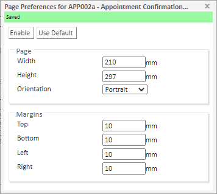
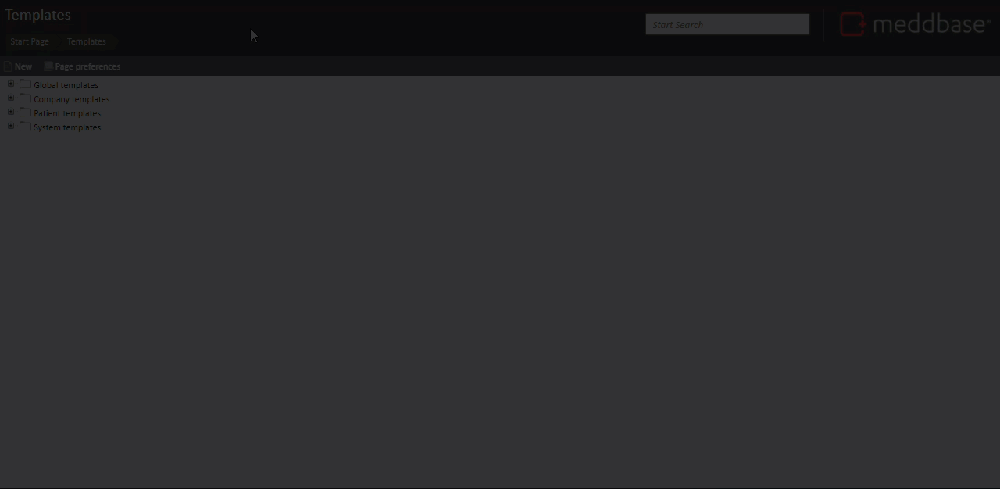

What is the purpose of the article?
This article outlines the steps necessary to adjust margins and page width, height, or orientation for template documents.
In this example, we'll use a specific template within the Appointment Document Type in the Patient Templates group.
Steps to adjust page preferences for template documents
To do this in Meddbase:
- Navigate to the Start page
- Click on the Templates tile
- Expand the Patient templates folder by clicking on the '+' sign
- Expand the required folder (in this example Appointments)
- Click on the required template to select it
- Click on the Page preferences tool near the top of the page
- In the Page Preferences for ... dialogue that appears, click on Enable
- Manually enter your preferred Width, Height and Orientation for the page as required
- Manually enter your preferred Top, Bottom, Left and Right margins as required.

The changes are automatically applied for that template. - Close the Dialogue when complete.
Want to see more?
This short video shows the steps for enabling and updating page preferences for a specific document template.
